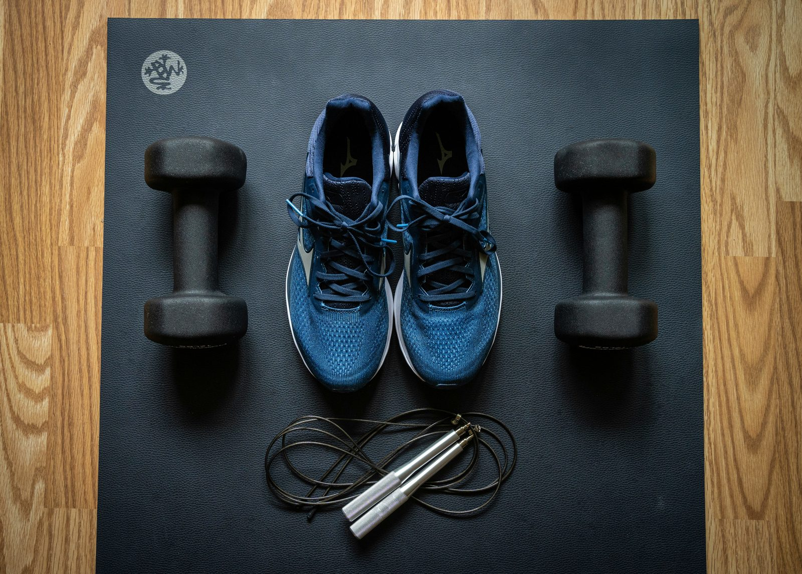

The 5am gym crowd swears by morning training. The after-work crowd swears their evening sessions feel stronger. Both are right, in different ways — the science actually supports real physiological differences between morning and evening exercise, even though the practical answer for most people comes down to something simpler than biology.
The physiological case for evening training
Core body temperature, joint flexibility, and muscular function all follow a daily rhythm that tends to peak in the late afternoon or early evening for most people. Higher body temperature is associated with better muscle elasticity, faster nerve conduction, and marginally improved strength and power output — which is part of why many people report personal records more often in evening sessions than early morning ones.
The consistency case for morning training
Morning workouts have a structural advantage that has nothing to do with physiology: they happen before the day has a chance to interfere. Meetings run long, energy dips, social plans come up — all more likely to derail an evening session than a morning one completed before any of that unfolds. Research on exercise adherence consistently finds morning exercisers report higher long-term consistency, largely for this scheduling reason rather than any performance difference.
Does training time affect fat loss?
Some research on fasted morning cardio suggests a higher proportion of fat is oxidised during the session itself compared to fed, evening exercise. However, this effect on fat used during the workout doesn't reliably translate into greater overall fat loss over weeks — total daily calorie balance is a far stronger driver of fat loss than which macronutrient is burned during a single session.
Hormonal differences throughout the day
Cortisol, the primary stress hormone, is naturally highest in the morning as part of the normal waking cycle, while testosterone also tends to be modestly elevated earlier in the day. Some have proposed this makes morning training hormonally advantageous for muscle building, but the practical effect of these daily hormonal fluctuations on actual training outcomes is much smaller than programme design, total training volume, and nutrition.
Sleep considerations for evening exercise
A common concern is that evening exercise disrupts sleep. For most people doing moderate-intensity training, this isn't a significant issue. However, very intense training within roughly an hour of bedtime can elevate core body temperature and heart rate enough to delay sleep onset for some individuals — if you train in the evening and notice sleep issues, shifting intense sessions slightly earlier or allowing more wind-down time before bed is a reasonable adjustment.
What actually determines your ideal training time
Beyond the modest physiological differences, the practical determining factor is almost always which time you can train at consistently, with reasonable energy, without the day's demands crowding it out. A slightly-less-optimal-on-paper morning session performed six days a week reliably outperforms a theoretically-stronger evening session that gets skipped half the time due to scheduling conflicts.
Which should you choose?
If your schedule allows genuine flexibility and you're chasing peak strength performance specifically, an afternoon or evening session may give a small physiological edge. If consistency is your bigger challenge — as it is for most people — training whenever you can reliably show up, morning or otherwise, will produce better results over months than chasing a theoretical performance advantage you can't consistently access.
Frequently asked questions
Is it true strength peaks in the evening?
Yes, on average — body temperature, joint flexibility, and muscle function tend to peak in the late afternoon or evening, which can translate to modestly better strength performance compared to early morning.
Does working out in the morning burn more fat?
Some studies suggest fasted morning training may increase fat oxidation during the session itself, but total daily fat loss depends far more on overall calorie balance than workout timing.
Will evening exercise disrupt my sleep?
For most people, moderate evening exercise doesn't meaningfully disrupt sleep, though very intense training close to bedtime can raise heart rate and body temperature enough to delay sleep onset for some individuals.
Which time of day is best for building a consistent habit?
Morning workouts are generally associated with higher long-term consistency, since they're completed before the day's demands and unexpected events can interfere.